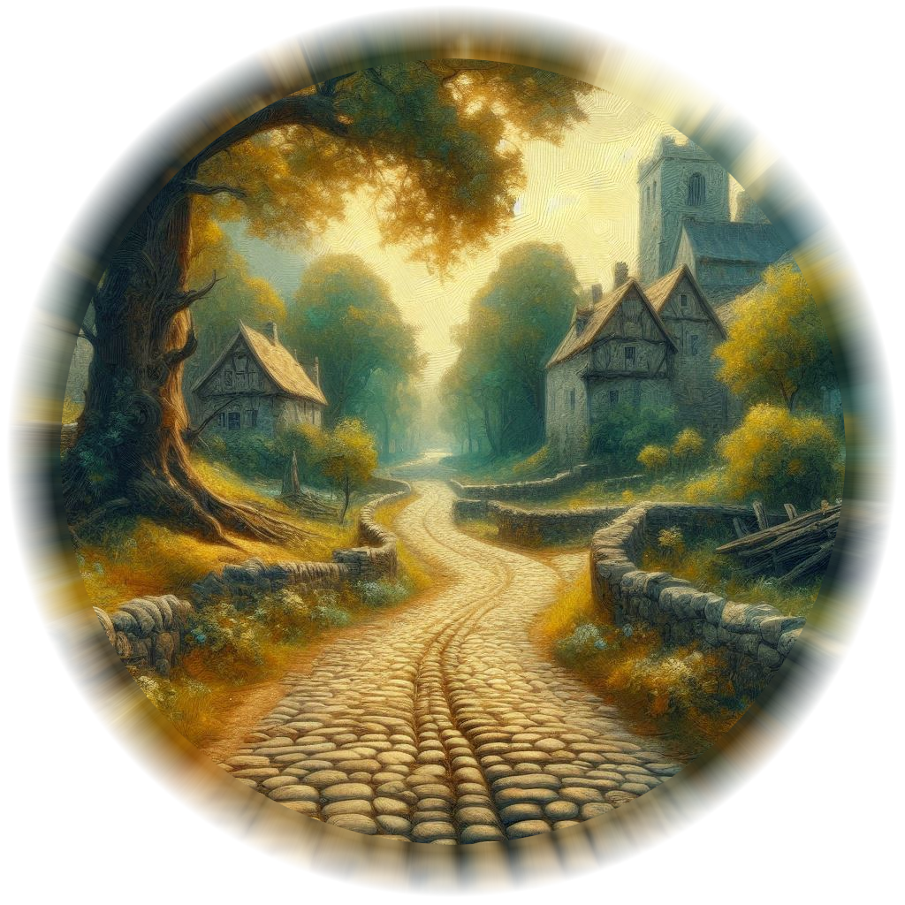

North

North Road to Hemlock

Onyx's Cottage

Quiver Row

Magistrate

Wyrmblood Flask

West Road to Hawthorn

Moonspire Temple

Blackpines Ruins

Apothecary to Onyx...15 Minutes by Foot
Blacksmith to Onyx's Cottage...30 Minutes by Foot
Town Square to Onyx's Cottage... 10 Minutes by Foot
Belladonna to Hemlock...12 Hours by Foot
Town Square to Quiver Row...5 Minutes by Foot
Town Square to Blacksmith...10 Minutes by Foot
Town Square to Magistrates...10 Minutes by Foot
Town Square to Wyrmblood Flask...5 Minutes by Foot
Town Square to Rangers Guild...30 Minutes by Foot
Ranger's Guild to Magistrates...20 Minutes by Foot
Ranger's Guild to Wyrmblood Flask...25 Minutes by Foot
Quiver Row to Magistrates...15 Minutes by Foot
Blacksmith to Wyrmblood Flask...15 Minutes by Foot
West Road to Hawthorn...10 Hours by Foot
East Road to Moonspire Ruins... 8 hours by Foot
South Road to Blackpines... 6 hours by Foot